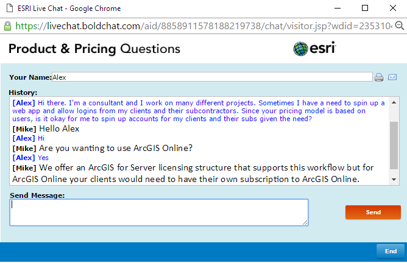
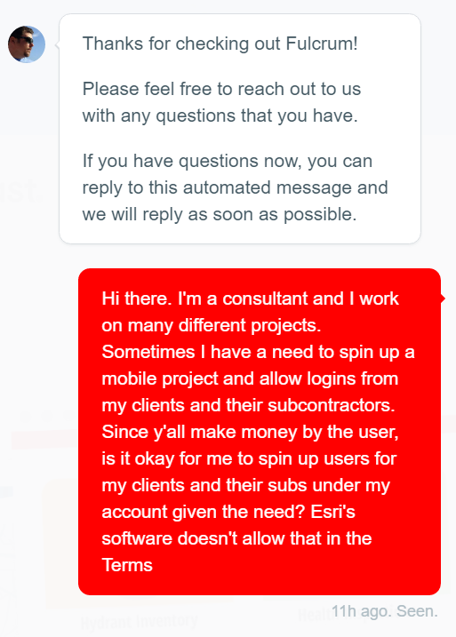
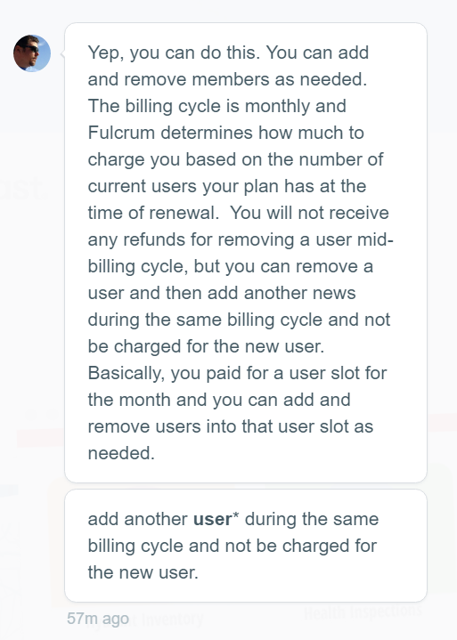
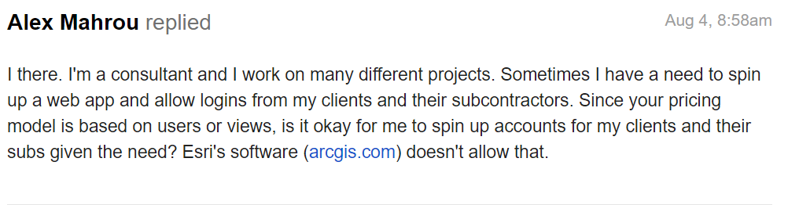
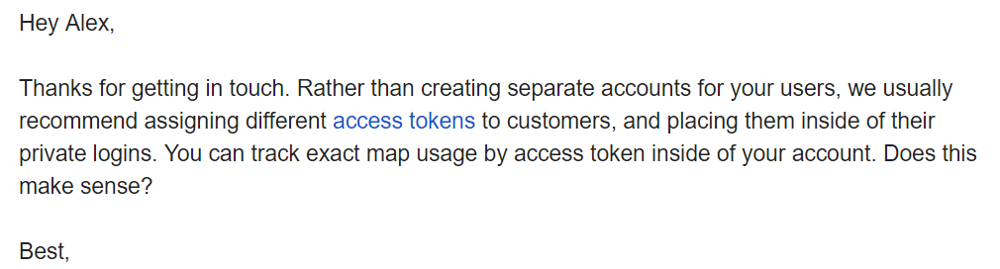
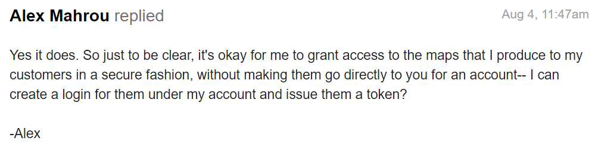
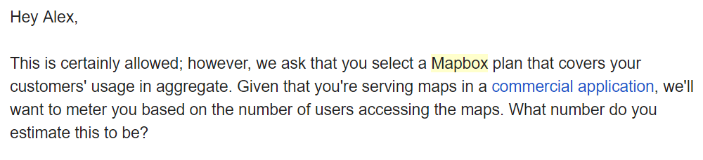
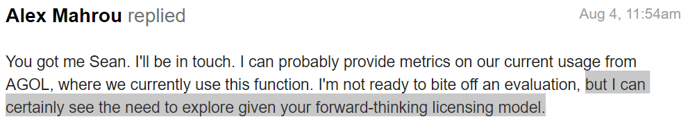
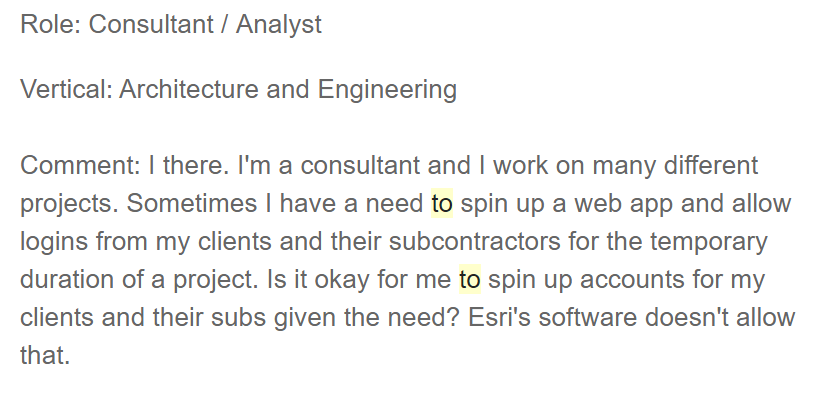
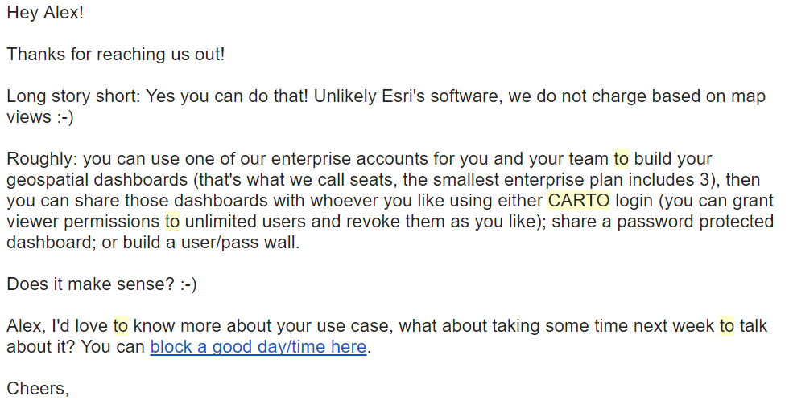

The ArcGIS Identity Crisis
I've been working with the ArcGIS Suite of products since I was first indoctrinated into the cult of Commercial GIS Software during my Geography undergrad at the University of Texas at San Antonio. It was so simple then to me to use desktop GIS to deliver maps. In the first decade of this century, Esri has been growing its product suite by leaps and bounds, and in my opinion, with constant growing pains along the way. In full disclosure, the ArcGIS product suite makes up a large part of my stack right now. And I see huge value in what it brings to every day challenges.
The following highlights a specific concern of mine. And that's (in the title) the ArcGIS Identity model. To further define this terminology, identity can be used interchangeably with the named user. Here's a link to the definition from Esri..
Upon reading the above link, you can gather that the mantra of ArcGIS Everywhere is alive: you can use the identity everywhere-- COTS Apps, custom apps, through Esri's business partners, etc.
So what's the beef?
As a consultant, who creates temporary GIS projects to augment AEC projects, I have to share my data with my clients and stakeholders on the web or via mobile apps. Unfortunately, according to Esri, if I publish content to ArcGIS.com, I can only share this data internal to my organization. Esri goes further to insist that my organization only consists of my employees and contractors. Anyone beyond that must have their own ArcGIS.com account. Spinning up a temporary account for a client to view data on a project that I've undertaken for them is a no no.
So what am I to do? Well, there are some new kids on the block with less restrictive licensing models. But I'm so entrenched now with AGOL, is it too late to switch horses? I think not. Right now my main usage of AGOL are web apps, and Collector for ArcGIS. All I need is a smart web map strategy, and a mobile strategy and I have the potential to ditch the shackles of the restrictive identity constraints.
I reached out to Esri (just to double check), Mapbox, Fulcrum and Carto (previously CartoDB) for their take on allowing me to spin up accounts for my clients for the duration of a project. Below are snippets from each.
ArcGIS Chat
 I even stated, "Since your pricing model is based on users". Maybe to jar some reason into this front-line chat dude, that maybe their stance is actually hurting their ability to get more users?
Fulcrum Chat
 
Mapbox
    
Carto
 
Synopsis
I had a misspelling that propagated across all chats and emails. I said "I there instead of "Hi there". Besides that, the meat of this is that Esri needs to get with the program if they want broader usage of their toolset. AGOL is great functionality wise, but if I have to put my clients through a toll booth to show them data, it’s a non-starter. Especially when I can go down the street to MapBox, Carto, or Fulcrum for my Web Mapping and Mobile GIS Needs, and their licensing model isn't a consultant's nightmare.
There is extreme hubris in this one component/approach of the ArcGIS product, and I can foresee that if things don't change, more will consider some of these alternatives. Did you see the Carto (CartoDB at the time) Boat that parked right up at the Marina during the Esri UC in 2015? It was touted as the "UnConference Boat".
Day 2 of #EsriUC, day 2 of @cartoDB #UCboat starts soon around 11! pic.twitter.com/kDgUgkxXis
— Andrew Thompson (@andrewbt) July 21, 2015
Or that huge Mapbox Party that was thrown at the Esri UC this year on the USS Midway?
At USS Midway, an aircraft carrier. Thanks @Mapbox #EsriUC2016 @gruntify @gispeople pic.twitter.com/IIfJuE6wwj
— Igor Stjepanovic (@igor_au) June 29, 2016
These companies are not some fly by night hipsters that aren't going anywhere. This is no longer just Open Source Alternatives vs Esri. These commercial entities are backed by communities/ seeking a less restrictive alternative, Venture Capital that sees an underserved market, and developers who strive to create a product that not only stands up to the legacy offering, but raises it to a new standard of interoperability and flexibility. Make no mistake, they are out to eat Esri's lunch. As a user that's been mated to the ArcGIS Platform for years, I'm happy that there's some healthy competition in the web and mobile space, and I look forward to giving it a whirl.
Cheers,
Alex